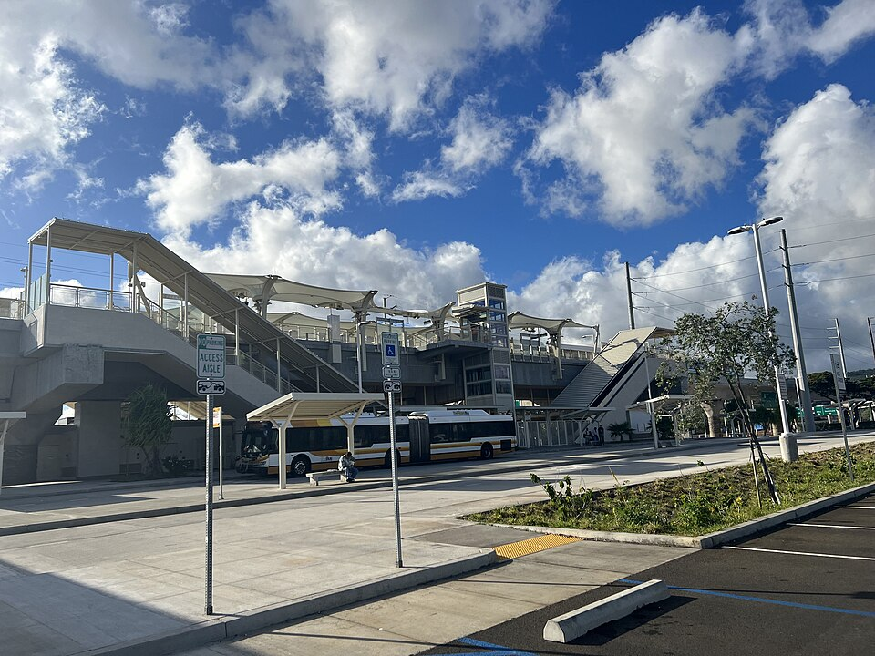

Hālawa Rail Station
Place: Hālawa Rail Station, Hālawa, Oʻahu
Type: Skyline rail station / Aloha Stadium station
Namesake: Hālawa, the historic ahupuaʻa extending from the Koʻolau mountains toward the waters of Pearl Harbor
Story it tells: How an ancient Hawaiian place name survives within a locale transformed from loʻi and wetlands to warfare, military development, highways, Aloha Stadium, and one of Oʻahu's major modern transportation hubs.

Hālawa Rail Station stands at the intersection of Kamehameha Highway and Salt Lake Boulevard beside Aloha Stadium. When Skyline opened on June 30, 2023, Hālawa served as the system's eastern terminus until the line was extended through the airport and to Middle Street in October 2025. Today, the station is surrounded by rail infrastructure, highways, parking lots, nearby military facilities, and the redevelopment of the stadium district, but the name Hālawa belongs to a much older landscape.
Hālawa, meaning “curve” or “bend,” is the name of the traditional ahupuaʻa extending from the Koʻolau Mountains through Hālawa Valley to the waters of Pearl Harbor, traditionally known as Puʻuloa. Hālawa is also the easternmost ahupuaʻa of the ʻEwa District. Immediately beyond it lies the Moanalua ahupuaʻa and the beginning of the Kona District. The name Hālawa describes the curving geography of the valley and surrounding lands.
Water shaped Hālawa for centuries. Hālawa Stream carried rain from the Koʻolau Mountains and fresh water from springs through the valley and across the broad coastal plain before emptying into Pearl Harbor. Its freshwater supported loʻi kalo, while the wet lowlands would later supported rice, watercress, and other crops. Near the shoreline, freshwater mixing with the ocean created productive wetlands and brackish fishponds, including Loko Kumumaʻu near the mouth of Hālawa Stream.
Hālawa was also the setting for one of the final struggles for control of Oʻahu before the arrival of Kamehameha I's army. After the death of Maui ruler Kahekili II in 1794, his former domain was divided between his son Kalanikūpule, who controlled Oʻahu, and his half-brother Kāʻeokūlani, who controlled Kauaʻi and Maui Nui (Maui, Molokaʻi, and Lānaʻi). The arrangement quickly collapsed into war, with Kāʻeokūlani bringing his forces to Oʻahu to challenge his nephew.
The resulting Battle of Kukiʻiahu spread across the ʻAiea-Hālawa area in late 1794. Much of the land fighting occurred around the fertile lowlands near the boundary between the two ahupuaʻa, close to where Sumida Farm operates today. Kalanikūpule received an enormous advantage from British Captain William Brown, who provided naval support from the waters of Pearl Harbor. Cannon fire targeted Kāʻeokūlani's forces from offshore as fighting continued across the plains. His army eventually collapsed and retreated toward Hālawa Valley, where Kāʻeokūlani was killed.
During the nineteenth and early twentieth centuries, Hālawa's fertile lower lands were farmed. Native Hawaiian, Chinese, Japanese, and other farmers cultivated taro, rice, watercress, and other crops across the wet plain. Significant portions of Hālawa were inherited by Queen Emma and later passed to the Queen's Hospital after her death in 1885. Over time, leases and land sales, to support the hospital, divided parts of the lower plain among plantations and many individual farmers.
The attack on Pearl Harbor on December 7, 1941, almost immediately changed the trajecotry for the area. Hālawa's location beside the harbor made the area strategically important to the United States military, which acquired and occupied land for wartime defense and logistics. Agricultural lands were seized using emergency powers and farmers displaced while fuel lines, communications systems, utilities, and other military infrastructure spread through the area. Along the shoreline, wetlands and fishponds were filled as Pearl Harbor expanded into a heavily fortified military complex.
After the war, portions of the military-controlled land remained under federal control until being declared surplus. In 1967, the City and County of Honolulu acquired approximately 58 acres near Hālawa for a new public stadium. The property was later transferred to the State of Hawaiʻi, and construction of Aloha Stadium began in the early 1970s. When the stadium opened in 1975, it opened a new chapter for the area focused on recreation and entertainment.
Nearly half a century later, transportation again reshaped Hālawa. Construction of Honolulu's elevated rail system brought concrete columns and guideways alongside the highways and stadium. During development of Skyline, the Hawaiian Station Naming Working Group researched traditional names along the route and recommended Hālawa for the station originally identified as Aloha Stadium Station. The name was formally adopted in 2018 as part of a broader effort to return traditional Hawaiian place names to everyday use.
Hālawa Rail Station opened in 2023 beside a stadium that had already hosted its final major events and was awaiting demolition. The surrounding property is now undergoing another transformation as the old stadium is demolished and plans move forward for a new stadium and mixed-use sports and entertainment district.
Hālawa has survived a landscape transformed from loʻi, fishponds, and battlefields into military infrastructure, highways, a stadium, and an automated railway. Today, Hālawa Station places one of the area's oldest names on a major modern transportation hub, even as neighboring Aloha Stadium and the surrounding area are being redefined.